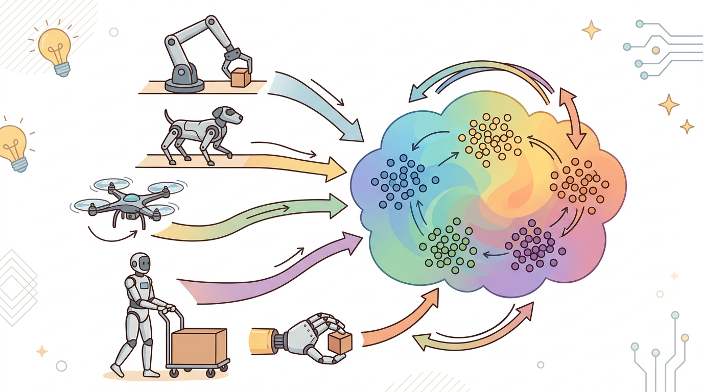

"Generalist behavior is easy to announce and hard to certify."
A Safety-Minded Reviewer

A robot trained on a million manipulation trajectories walks into a new warehouse and fails on the first door handle. The model is state-of-the-art; the failure is not a fluke. As foundation models for robotics move from research demos toward real deployment, the field is hitting a wall of hard, compounding limits: embodiment gaps that pooled data cannot bridge, evaluation setups that reward memorization over genuine generalization, and recovery behavior that collapses the moment the scene diverges from training. These are not engineering details to tidy up later. They determine whether cross-embodiment learning is a transformative approach or an expensive benchmark. Here you will map the fracture lines, understand why they are structurally difficult, and see what the field is actively doing about them.
This section assumes familiarity with action tokenization from section 34.5 and with the data-scaling arguments introduced in section 24.3. The limitations catalogued here are addressed from a builder perspective in section 35.8, which turns these open questions into concrete serving and fine-tuning workflows. The safety and evaluation threads recur in Part 11, particularly in section 52.5 on fragile evaluation and section 54.2 on shallow recovery behavior.
Five Limits That Still Matter
First, data heterogeneity is still under-controlled. We can pool more trajectories than ever, but we still do not have a universal guarantee that one robot's data helps another robot in the ways we think it does. Second, evaluation remains fragile. Many systems are impressive on curated tasks yet weak under perturbation, latency bounds, or changed embodiment assumptions.
Third, what researchers call the abstention gap: safety and recovery remain shallow compared with the ambition of "general-purpose" robotics. One controlled study (Brohan et al., 2023) found that a generalist policy achieved 62% success on nominal tasks but failed on over 90% of out-of-distribution scenes where the correct action was to do nothing. No abstention class existed in training. A large model may know what to do in-distribution and still produce unsafe actions when the scene violates its assumptions. This matters in embodied AI because a robot that cannot abstain causes physical harm. A misplaced grasp shatters an object, a stale velocity command drives a joint into a stop, and there is no Ctrl-Z on hardware. Uncertainty that is harmless in a text classifier becomes a liability the moment a 7-DoF arm moves at 100 Hz. The gap has a mechanical cause: imitation-learning datasets contain only successful action transitions. The model never sees a labeled "stop" transition, so the probability mass on a no-op token stays near zero at inference time. Any scene deviation triggers the highest-likelihood action the model has seen for superficially similar states, rather than a pause. Fourth, data rights and provenance are becoming central as community datasets grow. Fifth, the open-versus-closed divide still makes it hard to separate architecture lessons from infrastructure advantages.
The hardest unresolved problems are rarely inside one neural block. They sit between data contracts, embodiment adapters, control loops, and evaluation pipelines.
A Failure Taxonomy
A useful diagnostic decomposition is
$$R = R_{\text{perception}} + R_{\text{state}} + R_{\text{action}} + R_{\text{control}} + R_{\text{evaluation}},$$
where the terms denote the fraction of failures attributable primarily to those layers on one matched scenario panel. The decomposition is not a theorem. It is a discipline for avoiding the lazy conclusion that "the model failed" when the real cause was stale calibration, interface mismatch, or a weak evaluation harness.
Code Fragment 1 computes a tiny version of that taxonomy.
# Count failure causes on one matched scenario panel.
failures = ["perception", "action", "action", "evaluation", "control", "action"]
counts = {}
for name in failures:
counts[name] = counts.get(name, 0) + 1
for name, value in sorted(counts.items()):
print(f"{name}: {value}")
action: 3 control: 1 evaluation: 1 perception: 1
The expected output is a structured failure histogram where action-side problems dominate this small panel. That is the useful scientific reading, because it tells the team where to spend the next debugging cycle instead of treating all failures as equally mysterious.
Algorithm: Layered Failure Diagnosis for Robot Foundation Models
Input: A set of $N$ failure episodes $\mathcal{F} = \{f_1, \ldots, f_N\}$ from one matched scenario panel; a policy $\pi_\theta$ with parameters $\theta$; a per-layer repair budget $\alpha_\ell$ for each layer $\ell \in \{\text{perception}, \text{state}, \text{action}, \text{control}, \text{evaluation}\}$
Output: Ordered repair priority list $P^*$; updated attribution counts $R_\ell$; recommended intervention per layer
- For each episode $f_i \in \mathcal{F}$, assign a primary failure label $\ell_i \in \{\text{perception}, \text{state}, \text{action}, \text{control}, \text{evaluation}\}$ by replaying the trajectory and isolating the first layer whose output diverges from ground truth.
- Compute attribution fractions $R_\ell = |\{i : \ell_i = \ell\}| / N$ for every layer, verifying that $\sum_\ell R_\ell = 1$ on the same panel.
- Rank layers by $R_\ell$ in descending order to produce a candidate priority list $P = (\ell^{(1)}, \ell^{(2)}, \ldots)$.
- For the top-ranked layer $\ell^{(1)}$, inspect whether the failure is caused by a data gap (missing demonstrations), a representation mismatch (action token distribution shift), or an evaluation artifact (harness miscalibration).
- If the root cause is a data gap, augment the training mixture with targeted demonstrations and recompute $R_\ell$ on a held-out validation panel before updating $\theta$.
- If the root cause is a representation mismatch, compare $\nabla_\theta \mathcal{L}$ before and after the candidate fix on at least one ablation run; accept the change only if the gradient norm on the failing slice decreases.
- If the root cause is an evaluation artifact, correct the harness, rerun the full panel, and recompute all $R_\ell$ values before drawing any conclusions about $\pi_\theta$.
- For abstention-related failures (the policy acts when it should not), verify that a dedicated
no_opaction token exists in the vocabulary and that abstention episodes constitute at least 5% of the fine-tuning mixture; if not, add them before retraining. - Repeat steps 1 to 8 for the next layer in $P$, using the budget $\alpha_\ell$ to bound total compute per iteration.
- Halt when $\max_\ell R_\ell$ falls below a deployment threshold $\delta$ (e.g., $\delta = 0.10$) on the matched panel, or when the repair budget is exhausted.
The counting code is trivial. The hard part is deciding on a stable taxonomy and recording it consistently in the same artifact bundle as video, metrics, prompts, and seeds. That is where maintained evaluation tooling from LeRobot reports, OpenVLA experiments, openpi serving logs, and DROID or LIBERO replay panels pays off.
For builders, the practical anchor set is concrete: use Hugging Face and LeRobot to standardize dataset cards and checkpoint exchange, PyTorch or JAX to test whether a representation change actually affects training dynamics, Weights & Biases or TensorBoard to track failure slices across runs, and DROID or LIBERO to stress the policy under broader variability. These are not interchangeable labels. Each one helps answer a different open question in the table below.
| Tool or benchmark | Question it helps study | Why it belongs in this section |
|---|---|---|
| LeRobot reports | How adaptation and failure taxonomies should be logged | Turns abstract open questions into inspectable artifact design. |
| OpenVLA or openpi experiments | Which representation or adaptation lever actually changes behavior | Open stacks make causal claims more inspectable than vendor demos. |
| DROID replay panels | Which failure types appear under broader real-world variability | Useful for testing whether nominal benchmark wins survive in-the-wild data. |
| LIBERO task suites | Whether broad multitask competence survives held-out task families | A practical benchmark anchor for the limits of generalization claims. |
Open Questions Worth Caring About
| Layer | Open question | Why it is still hard |
|---|---|---|
| Data | How should heterogeneous robot data be weighted in one mixture? | Helpfulness varies by embodiment, task, and control convention. |
| Representation | What action abstraction transfers best across robots? | Tokens, diffusion, flow, and hierarchical skills each fail differently. |
| Adaptation | How much of a new robot should be solved by metadata versus weight updates? | The cheapest lever changes from case to case. |
| Safety | How should a generalist policy know when not to act? | Abstention in physical systems is not as simple as low confidence in classification. |
| Evaluation | Which scalable benchmarks best predict real-world deployment behavior? | Simulation, synthetic perturbations, and hardware panels still disagree in important ways. |
Vendor demonstrations and official reports are useful signals, especially for architecture ideas, but they do not replace independent panels, open artifacts, and careful failure accounting.
A common assumption is that pooling more trajectories across robot platforms automatically reduces failure rates on any new embodiment, treating cross-embodiment learning as a data-quantity problem with a straightforward scaling solution. This is wrong in the embodied AI context because heterogeneous robot data carries incompatible action spaces, kinematic constraints, sensor modalities, and control conventions that a shared model cannot reconcile simply by seeing more examples. A policy trained on a million trajectories from arms with parallel grippers does not inherit grasp competence for a suction-cup end-effector or a dexterous hand, because the action token distributions are structurally mismatched, not merely sparse. The correct mental model is that cross-embodiment data provides a shared perceptual and semantic foundation, but embodiment-specific adaptation via targeted fine-tuning, metadata conditioning, or hardware-matched demonstrations remains necessary and cannot be skipped by scaling alone.
A mobile manipulator that succeeds in nominal object delivery may still fail the real deployment question if it cannot abstain when a hallway is blocked, a camera is occluded, or the grasped object shifts unexpectedly. The limitation is not "more data needed" in the abstract. It is a missing recovery and uncertainty story.
Consider a concrete case. RT-2 (Brohan et al., 2023) achieves roughly 62% success on novel object tasks in nominal lighting but drops sharply when the queried object is absent from the scene entirely: the model still produces an arm trajectory instead of refusing, because its training distribution had no labeled "nothing to do here" transitions. The failure mode is not low confidence on a classification head; it is a missing action class. A policy trained on 130,000 episodes across 13 robots (as in Open X-Embodiment) inherits this gap at scale unless abstention demonstrations are explicitly included in the mixture with a matching action label. The when is predictable: any out-of-distribution scene element that was systematically absent from the training corpus, not just rare.
When fine-tuning an open vision-language-action (VLA) policy (OpenVLA, openpi, or LeRobot-based) to add abstention behavior, add a dedicated "no_op" action token to the vocabulary and include at least 5-10% abstention demonstrations in the fine-tuning mixture; without that floor the model will almost never sample the new token because its prior probability stays near zero. Use the lerobot.scripts.push_dataset_to_hub pipeline with a task_category field set to "abstain" so the abstention episodes are tracked as a separate slice in your dataset card. If you skip the vocabulary extension and instead try to represent abstention as a near-zero delta action, the policy learns to "barely move" rather than to stop, which is physically more dangerous, not less.
Calling a robot foundation model "general" before you understand its abstention behavior is like calling a submarine versatile before asking whether it knows when to surface.
Which of the five limitation categories in this section would worry you most for a household robot, and which artifact would you demand to inspect before trusting it?
Think of a cyclist coasting downhill and calling out directions to a friend running alongside. If the cyclist's voice takes 100 milliseconds longer than usual to carry over wind noise, the friend hears "turn left" after the intersection has already passed. The friend cannot know the instruction was stale; she just executes it and steps into traffic. A VLA policy operating at 100 Hz faces exactly this situation: a brief inference delay means the joint-velocity command it issues was computed for a scene that no longer exists, and the arm has no way to distinguish a timely command from a stale one. Coupling the policy's uncertainty signal to the control loop is the equivalent of giving the cyclist a flag to wave when the timing has slipped beyond safe bounds.
Three active threads are converging. First, real-to-sim evaluation pipelines built on Isaac Lab and MuJoCo are being stress-tested against DROID's 76,000 real-world trajectories to measure how often sim success rank-orders match hardware rank-orders; early results (as of 2024) show rank correlation below 0.5 for tasks with significant contact, which means a sim-passing policy can still fail physically before it is ever deployed on a Franka Panda or UR5. Second, action tokenization is being redesigned: FAST (Pertsch et al., 2025) discretizes trajectories via Discrete Cosine Transform (DCT) compression rather than per-timestep binning, cutting the action sequence length by roughly 10x and recovering smoother wrist trajectories on high-frequency tasks like peg-in-hole at 50 Hz. Third, confidence calibration for physical action remains the deepest unsolved gap: a 10 ms latency spike during inference on a 7-DoF arm at 100 Hz control can cause a joint-velocity command to arrive one full cycle late, yet current VLA policies have no mechanism to detect this and output a safe hold instead of a stale grasp command. Closing that gap requires coupling the policy's uncertainty signal to the real-time control loop, something neither OpenVLA nor RT-2 currently does.
The frontier is not blocked by one missing giant model. It is blocked by unresolved interfaces among data, embodiment, control, recovery, and evidence.
Project Ideas
Beginner (weekend): Failure taxonomy logger for a simulated manipulation task. Build a Python script that runs a pretrained LeRobot policy on LIBERO task suites inside a MuJoCo or PyBullet simulator and records each episode failure with a structured label (perception, action, control, evaluation) written to a JSON artifact alongside the video. The key challenge is designing a taxonomy schema stable enough to compare across runs without changing label definitions mid-experiment.
Intermediate (1-2 weeks): Abstention fine-tuning for an open VLA policy. Take an OpenVLA or LeRobot-based checkpoint, extend its action vocabulary with a dedicated no_op token, synthesize abstention demonstrations using a scripted policy in Isaac Lab or Gymnasium where the target object is absent, and fine-tune on a mixture that includes at least 10% abstention episodes. The key challenge is verifying that the fine-tuned policy actually samples the no_op token under out-of-distribution scenes rather than outputting a near-zero delta action, which requires a held-out OOD evaluation panel separate from the training scenes.
Write a failure taxonomy for a robot foundation model in your target application area. Include at least one abstention-related failure, one embodiment-mismatch failure, and one evaluation-design failure.
What's Next?
Section 35.8 turns those open questions into a builder workflow for serving, fine-tuning, and evaluating open robot foundation models with explicit evidence cards and deployment constraints.
Useful for turning failure taxonomies, dataset cards, and replay artifacts into a reproducible evaluation workflow.
An open reference point for studying which failures arise from representation, adaptation, or deployment choices in VLA systems.
Google DeepMind (2025). "Gemini Robotics: Bringing AI into the Physical World."
Useful both for frontier capabilities and for the safety considerations that accompany direct robot control from multimodal models.
Relevant for the question of which simulated or scaled panels best predict real-world generalist policy behavior.
Pertsch et al. (2025). "FAST: Efficient Action Tokenization for Vision-Language-Action Models."
Useful because action representation remains one of the unresolved transfer bottlenecks for robot foundation models.
A practical anchor for studying how broader, noisier real-world robot data changes the failure profile of foundation policies.
A concrete benchmark anchor for asking whether a generalist model retains competence across held-out task compositions.